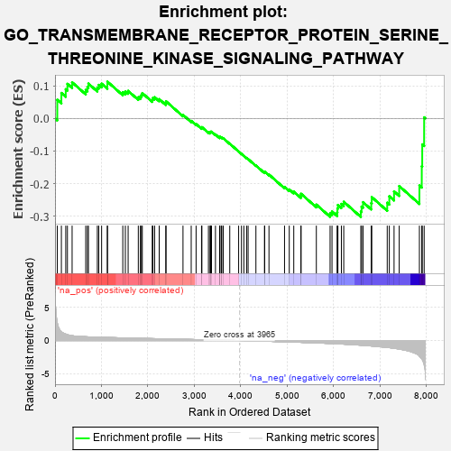
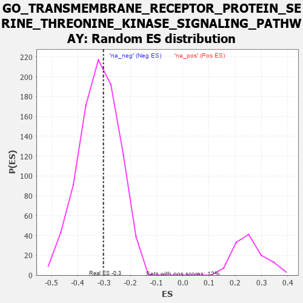

| | | Dataset | 7d |
| Phenotype | NoPhenotypeAvailable |
| Upregulated in class | na_neg |
| GeneSet | GO_TRANSMEMBRANE_RECEPTOR_PROTEIN_SERINE_THREONINE_KINASE_SIGNALING_PATHWAY |
| Enrichment Score (ES) | -0.30244496 |
| Normalized Enrichment Score (NES) | -0.9456962 |
| Nominal p-value | 0.57417893 |
| FDR q-value | 0.91311926 |
| FWER p-Value | 1.0 |
Table: GSEA Results Summary

Fig 1: Enrichment plot: GO_TRANSMEMBRANE_RECEPTOR_PROTEIN_SERINE_THREONINE_KINASE_SIGNALING_PATHWAY
Profile of the Running ES Score & Positions of GeneSet Members on the Rank Ordered List
| PROBE | GENE SYMBOL | GENE_TITLE | RANK IN GENE LIST | RANK METRIC SCORE | RUNNING ES | CORE ENRICHMENT | | 1 | TGFB3 | | | 49 | 2.654 | 0.0570 | No |
| 2 | HTRA4 | | | 137 | 1.341 | 0.0779 | No |
| 3 | SMAD5 | | | 231 | 0.979 | 0.0894 | No |
| 4 | TBX20 | | | 267 | 0.880 | 0.1059 | No |
| 5 | RGMB | | | 368 | 0.732 | 0.1106 | No |
| 6 | HES5 | | | 661 | 0.571 | 0.0872 | No |
| 7 | FST | | | 698 | 0.560 | 0.0960 | No |
| 8 | ID1 | | | 719 | 0.555 | 0.1067 | No |
| 9 | NLK | | | 911 | 0.504 | 0.0945 | No |
| 10 | PDCD4 | | | 941 | 0.497 | 0.1027 | No |
| 11 | MEN1 | | | 1003 | 0.483 | 0.1064 | No |
| 12 | NUP93 | | | 1127 | 0.459 | 0.1017 | No |
| 13 | SRC | | | 1128 | 0.459 | 0.1127 | No |
| 14 | VASN | | | 1459 | 0.398 | 0.0803 | No |
| 15 | INHBB | | | 1514 | 0.388 | 0.0827 | No |
| 16 | FZD1 | | | 1574 | 0.379 | 0.0843 | No |
| 17 | STRAP | | | 1793 | 0.339 | 0.0647 | No |
| 18 | GATA4 | | | 1837 | 0.330 | 0.0671 | No |
| 19 | SMAD4 | | | 1860 | 0.326 | 0.0721 | No |
| 20 | NEO1 | | | 1879 | 0.323 | 0.0775 | No |
| 21 | FOXD1 | | | 2093 | 0.292 | 0.0575 | No |
| 22 | BMP7 | | | 2107 | 0.290 | 0.0627 | No |
| 23 | ATOH8 | | | 2145 | 0.285 | 0.0648 | No |
| 24 | CREB1 | | | 2243 | 0.269 | 0.0589 | No |
| 25 | PELO | | | 2386 | 0.247 | 0.0468 | No |
| 26 | HIPK2 | | | 2389 | 0.247 | 0.0524 | No |
| 27 | FNTA | | | 2755 | 0.190 | 0.0107 | No |
| 28 | ACVR1 | | | 2932 | 0.161 | -0.0078 | No |
| 29 | LEF1 | | | 3037 | 0.144 | -0.0175 | No |
| 30 | SFRP5 | | | 3154 | 0.129 | -0.0291 | No |
| 31 | GCNT2 | | | 3162 | 0.128 | -0.0269 | No |
| 32 | SMAD3 | | | 3303 | 0.105 | -0.0422 | No |
| 33 | SMAD1 | | | 3337 | 0.099 | -0.0440 | No |
| 34 | UBE2O | | | 3348 | 0.097 | -0.0430 | No |
| 35 | TAB1 | | | 3351 | 0.097 | -0.0409 | No |
| 36 | SMAD7 | | | 3369 | 0.093 | -0.0408 | No |
| 37 | PTPRK | | | 3454 | 0.084 | -0.0495 | No |
| 38 | PIN1 | | | 3543 | 0.069 | -0.0590 | No |
| 39 | DMRT1 | | | 3546 | 0.068 | -0.0576 | No |
| 40 | FUT8 | | | 3551 | 0.067 | -0.0565 | No |
| 41 | PARD3 | | | 3584 | 0.063 | -0.0591 | No |
| 42 | MAPK3 | | | 3589 | 0.062 | -0.0581 | No |
| 43 | CBL | | | 3621 | 0.056 | -0.0607 | No |
| 44 | SKI | | | 3762 | 0.032 | -0.0777 | No |
| 45 | PPM1A | | | 3953 | 0.002 | -0.1017 | No |
| 46 | PARP1 | | | 4014 | -0.010 | -0.1091 | No |
| 47 | SFRP2 | | | 4065 | -0.018 | -0.1150 | No |
| 48 | ABL1 | | | 4125 | -0.027 | -0.1218 | No |
| 49 | HNF4A | | | 4157 | -0.034 | -0.1250 | No |
| 50 | CD109 | | | 4325 | -0.064 | -0.1446 | No |
| 51 | ILK | | | 4510 | -0.096 | -0.1656 | No |
| 52 | SNW1 | | | 4514 | -0.096 | -0.1637 | No |
| 53 | SNX25 | | | 4606 | -0.119 | -0.1724 | No |
| 54 | EP300 | | | 4941 | -0.186 | -0.2103 | No |
| 55 | PDPK1 | | | 5043 | -0.207 | -0.2181 | No |
| 56 | FLCN | | | 5140 | -0.235 | -0.2247 | No |
| 57 | MAGI2 | | | 5295 | -0.269 | -0.2378 | No |
| 58 | FKBP8 | | | 5296 | -0.270 | -0.2314 | No |
| 59 | ROR2 | | | 5626 | -0.353 | -0.2647 | No |
| 60 | STK11 | | | 5922 | -0.443 | -0.2915 | Yes |
| 61 | SH2B1 | | | 5963 | -0.459 | -0.2856 | Yes |
| 62 | USP9Y | | | 6075 | -0.498 | -0.2879 | Yes |
| 63 | FBN1 | | | 6080 | -0.499 | -0.2765 | Yes |
| 64 | UBB | | | 6090 | -0.503 | -0.2657 | Yes |
| 65 | EGR1 | | | 6165 | -0.527 | -0.2625 | Yes |
| 66 | SMAD2 | | | 6216 | -0.541 | -0.2559 | Yes |
| 67 | INHBE | | | 6584 | -0.701 | -0.2858 | Yes |
| 68 | LTBP2 | | | 6600 | -0.712 | -0.2707 | Yes |
| 69 | WWTR1 | | | 6631 | -0.729 | -0.2572 | Yes |
| 70 | ADAM9 | | | 6808 | -0.819 | -0.2600 | Yes |
| 71 | GIPC1 | | | 6819 | -0.826 | -0.2416 | Yes |
| 72 | DDX5 | | | 7152 | -1.037 | -0.2589 | Yes |
| 73 | OVOL2 | | | 7197 | -1.068 | -0.2391 | Yes |
| 74 | MSX2 | | | 7299 | -1.171 | -0.2240 | Yes |
| 75 | UBC | | | 7410 | -1.274 | -0.2076 | Yes |
| 76 | DLX5 | | | 7845 | -2.378 | -0.2060 | Yes |
| 77 | CAV3 | | | 7896 | -2.739 | -0.1471 | Yes |
| 78 | FBN2 | | | 7906 | -2.873 | -0.0799 | Yes |
| 79 | XIAP | | | 7947 | -3.696 | 0.0030 | Yes |
Table: GSEA details [plain text format]

Fig 2: GO_TRANSMEMBRANE_RECEPTOR_PROTEIN_SERINE_THREONINE_KINASE_SIGNALING_PATHWAY: Random ES distribution
Gene set null distribution of ES for GO_TRANSMEMBRANE_RECEPTOR_PROTEIN_SERINE_THREONINE_KINASE_SIGNALING_PATHWAY